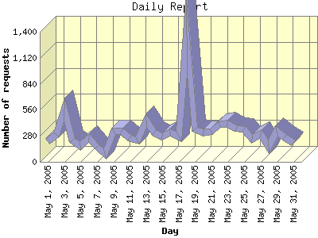

Report generated by Analog 6.0 and Report Magic 2.21
|
Web Server Statistics for "Harish Narayanan (hnarayan) - May 2005" Report generated by Analog 6.0 and Report Magic 2.21 |
The Daily Report identifies the activity for each day within the reporting period. Remember that one page hit can result in several server requests as the images for each page are loaded.

| Day | Number of requests | Number of bytes transferred | Percentage of the bytes | Percentage of the requests | |
|---|---|---|---|---|---|
| 1. | May 1, 2005 | 218 | 5.143 MB | 0.57% | 2.15% |
| 2. | May 2, 2005 | 291 | 7.641 MB | 0.85% | 2.87% |
| 3. | May 3, 2005 | 560 | 18.694 MB | 2.09% | 5.51% |
| 4. | May 4, 2005 | 232 | 10.499 MB | 1.17% | 2.28% |
| 5. | May 5, 2005 | 167 | 10.662 MB | 1.19% | 1.64% |
| 6. | May 6, 2005 | 259 | 7.060 MB | 0.79% | 2.55% |
| 7. | May 7, 2005 | 165 | 7.381 MB | 0.82% | 1.62% |
| 8. | May 8, 2005 | 85 | 7.084 MB | 0.79% | 0.84% |
| 9. | May 9, 2005 | 336 | 11.267 MB | 1.26% | 3.31% |
| 10. | May 10, 2005 | 336 | 13.422 MB | 1.50% | 3.31% |
| 11. | May 11, 2005 | 252 | 12.439 MB | 1.39% | 2.48% |
| 12. | May 12, 2005 | 231 | 15.514 MB | 1.73% | 2.27% |
| 13. | May 13, 2005 | 445 | 20.604 MB | 2.30% | 4.38% |
| 14. | May 14, 2005 | 320 | 5.725 MB | 0.64% | 3.15% |
| 15. | May 15, 2005 | 270 | 11.249 MB | 1.26% | 2.66% |
| 16. | May 16, 2005 | 320 | 13.937 MB | 1.56% | 3.15% |
| 17. | May 17, 2005 | 275 | 11.720 MB | 1.31% | 2.71% |
| 18. | May 18, 2005 | 1,381 | 14.211 MB | 1.59% | 13.60% |
| 19. | May 19, 2005 | 351 | 24.176 MB | 2.70% | 3.46% |
| 20. | May 20, 2005 | 314 | 15.236 MB | 1.70% | 3.09% |
| 21. | May 21, 2005 | 321 | 16.283 MB | 1.82% | 3.16% |
| 22. | May 22, 2005 | 397 | 12.291 MB | 1.37% | 3.91% |
| 23. | May 23, 2005 | 413 | 15.329 MB | 1.71% | 4.07% |
| 24. | May 24, 2005 | 356 | 17.413 MB | 1.95% | 3.50% |
| 25. | May 25, 2005 | 346 | 13.900 MB | 1.55% | 3.41% |
| 26. | May 26, 2005 | 250 | 8.605 MB | 0.96% | 2.46% |
| 27. | May 27, 2005 | 297 | 131.264 MB | 14.66% | 2.92% |
| 28. | May 28, 2005 | 158 | 189.615 MB | 21.18% | 1.55% |
| 29. | May 29, 2005 | 337 | 10.107 MB | 1.13% | 3.32% |
| 30. | May 30, 2005 | 267 | 231.921 MB | 25.91% | 2.63% |
| 31. | May 31, 2005 | 208 | 4.834 MB | 0.54% | 2.05% |
Most active day May 18, 2005 : 169 pages sent. 1,381 requests handled. 14,901,705.00 served.
Daily average: 327 requests handled. 28.878 MB served.
This report was generated on June 12, 2005 15:10.
Report time frame May 1, 2005 00:00 to May 31, 2005 23:57.
| Web statistics report produced by: | |
 Analog 6.0 Analog 6.0 |  Report Magic 2.21 Report Magic 2.21 |